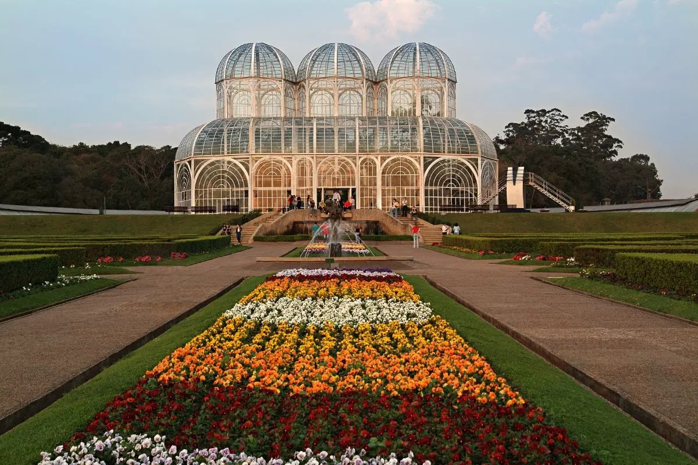
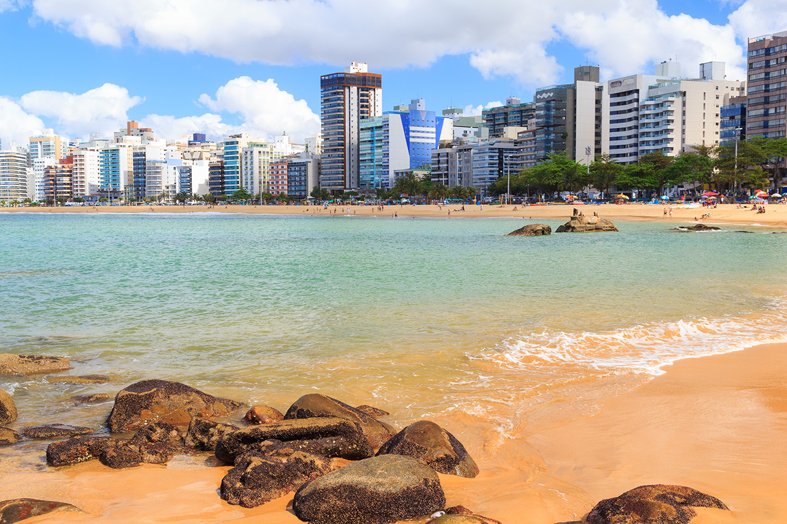

Destinos Recomendados
Arraial do Cabo: Um paraíso tropical no Rio de Janeiro

Praias paradisíacas: Arraial do Cabo é conhecida por suas praias de águas cristalinas e areia branca, como as Prainhas do Pontal do Atalaia, a Praia do Forno e a Praia do Farol. Essas praias são perfeitas para relaxar, tomar sol, nadar e praticar esportes aquáticos.
Natureza exuberante: A cidade também possui uma natureza exuberante, com morros verdejantes, grutas e cavernas. Você pode fazer trilhas, escaladas e passeios de barco para explorar a beleza natural da região.
Cultura vibrante: Arraial do Cabo tem uma cultura vibrante, com diversos restaurantes, bares e lojas. Você pode experimentar a culinária local, que inclui pratos à base de frutos do mar, e conhecer o artesanato local.
Atividades para todos: A cidade oferece atividades para todos os gostos, desde relaxar na praia até praticar esportes aquáticos, fazer trilhas e conhecer a cultura local. Arraial do Cabo é um destino perfeito para quem busca um lugar para descansar e se divertir.
Curitiba: Capital Verde e modelo de urbanismo
Cidade planejada: Curitiba se destaca por seu planejamento urbano inovador, com espaços verdes, transporte público eficiente e políticas públicas de qualidade.
Cultura vibrante: Museus, teatros, centros culturais e eventos durante todo o ano garantem uma vida cultural rica e diversa.
Ópera de Arame e Jardim Botânico: Entre os pontos turísticos mais famosos estão a Ópera de Arame, um ícone da arquitetura moderna, e o Jardim Botânico, um dos maiores da América Latina.
Natureza exuberante: Parques, bosques e áreas verdes preservadas proporcionam contato com a natureza no meio urbano.
Cidade para todos: Curitiba é uma cidade acessível e inclusiva, com opções de lazer, cultura e gastronomia para todos os gostos.
Vila Velha: Berço do Espírito Santo, entre história, natureza e belezas!
História: Fundada em 1535, Vila Velha é a cidade mais antiga do Espírito Santo e ostenta o título de Capital Histórica do Estado.
Praias: 32 km de litoral com praias paradisíacas como a Praia da Costa, Itapoã e Itaparica, ideais para relaxar, praticar esportes aquáticos e curtir o sol.
Convento de Nossa Senhora da Penha: Símbolo da cidade, o Convento, localizado no alto do Convento, oferece uma vista panorâmica deslumbrante.
Centro Histórico: Caminhe pelas ruas de paralelepípedos, admire a arquitetura colonial e visite museus e igrejas como a Igreja Matriz de São Pedro.
Mercado Municipal: Prove as delícias da culinária local e encontre produtos frescos e artesanato regional.
Trilhas e Natureza: Explore trilhas como a do Morro do Moreno e aprecie a rica fauna e flora da região.
Eventos: Carnaval, Festival de Inverno e Virada Cultural movimentam a cidade com música, dança e gastronomia.